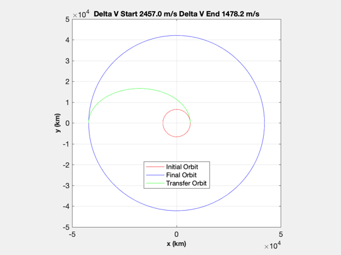

Runs demonstrations of selected orbit maneuver functions.
------------------------------------------------------------------------
See also OrbMnvrBielliptic, OrbMnvrHohmann, OrbMnvrInclination,
OrbMnvrLongAndIncl, OrbMnvrLongitude, OrbMnvrOneTangent, OrbMnvrSemimajor
------------------------------------------------------------------------
Contents
Run the built-in demo of each of these functions.
OrbMnvrBielliptic
OrbMnvrHohmann
OrbMnvrInclination
OrbMnvrOneTangent
OrbMnvrLongitude
OrbMnvrLongAndIncl
OrbMnvrSemimajor
Bi-elliptic Transfer
------------------------------------------------
Initial Orbit Radius = 6569.5100
Final Orbit Radius = 382689.9000
Intermediate Orbit Radius = 510253.2000
------------------------------------------------
Delta V Total = 3.9040
Delta V at A = 3.1562
Delta V at B = 0.6774
Delta V at C = 0.0705
Time of Flight = 593.9238 hours
Hohmann Transfer
------------------------------------------------
Initial Orbit Radius = 6569.5091
Final Orbit Radius = 42159.5136
------------------------------------------------
Delta V Total = 3.9352
Delta V at A = 2.4570
Delta V at B = 1.4782
Time of Flight = 5.2567 hours
Inclination Correction
------------------------------------------------
Velocity = 3.5680
Eccentricity = 0.3000
True anomaly = 150.0000 deg
Inclination Correction = 15.0000 deg
------------------------------------------------
Delta V Total = 0.9129
Flight Path Angle = 11.4559 deg
One-Tangent Transfer
------------------------------------------------
Initial Orbit Radius = 6569.5091 km
Final Orbit Radius = 42159.5136 km
True anomaly = 160.0000 deg
Type = periapsis
------------------------------------------------
Delta V Total = 4.6993 km/s
Delta V at A = 2.5754 km/s
Delta V at B = 2.1239 km/s
Eccentric Anomaly = 127.8053 deg
Time of Flight = 3.4574 hours
Longitude Correction
------------------------------------------------
Velocity = 5.8923
Inclination = 55.0000 deg
Longitude Correction = 45.0000 deg
------------------------------------------------
Delta V Total = 3.6942
Angle = 36.5377 deg
Initial latitude = 103.3647 deg
Final latitude = 76.6353 deg
Longitude Correction
------------------------------------------------
Velocity = 5.8923
Inclination = 55.0000 deg
Longitude Correction = 45.0000 deg
------------------------------------------------
Delta V Total = 3.6159
Initial latitude = 128.9041 deg
Final latitude = 97.3803 deg
Semimajor Axis Correction
------------------------------------------------
Velocity = 7.7843 km/s
Semimajor axis = 6578.0000 km
Semimajor axis Correction = 13.0000 km
------------------------------------------------
Delta V Total = 0.0077 km/s
